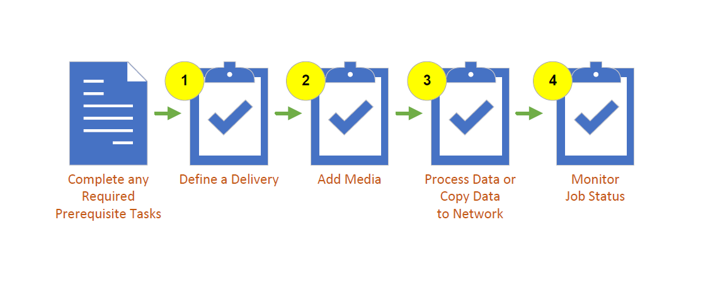
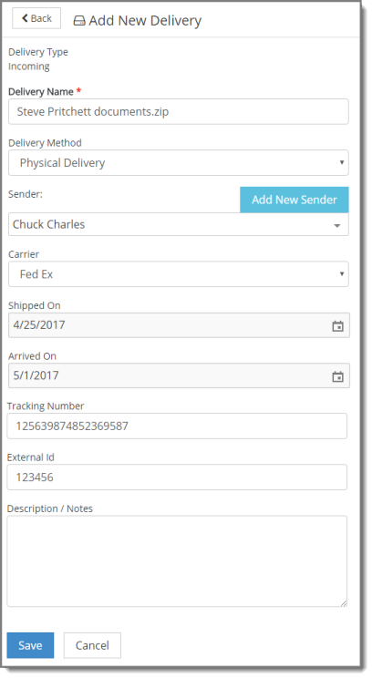
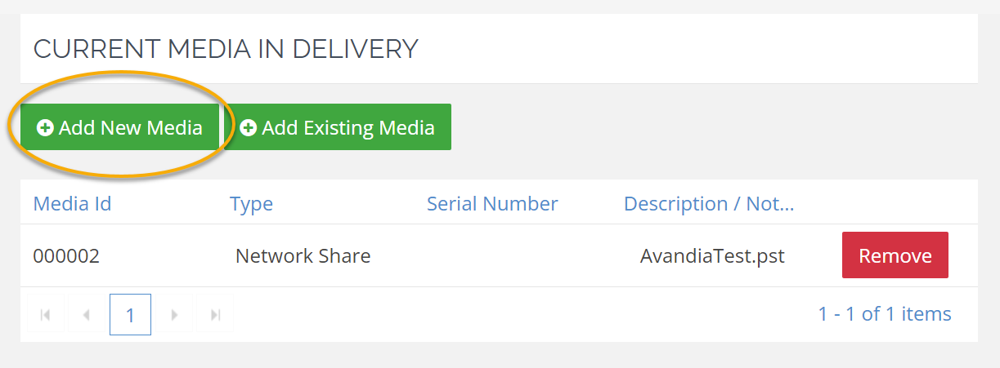
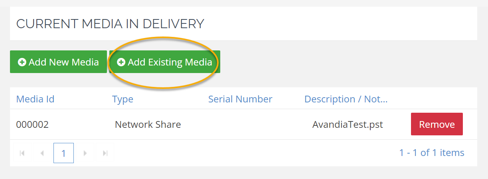
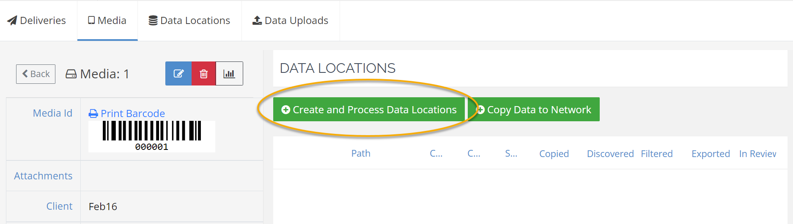
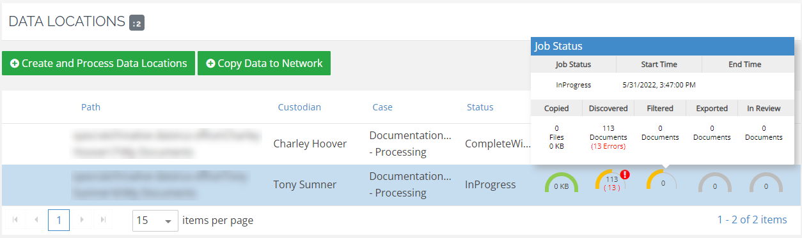

Tip: To make it easier to find the procedures you need, the procedures are collapsed. If you want to expand a procedure, click the triangle next to the procedure title to open and close the detailed information.
This topic contains high-level procedures to help you get started using Media Manager.
The following illustration shows the basic process outline. The numbers correspond to the procedures later in this topic.

The basic workflow diagram, above, and the tasks that follow outline one way you can use the Media Manager module. This article covers a standard, basic, method for doing so. However, there are many procedures not covered in this topic. Furthermore, there may be alternative ways to complete the same processes.
|
|
Tip: To make it easier to find the procedures you need, the procedures are collapsed. If you want to expand a procedure, click the triangle next to the procedure title to open and close the detailed information. |
The following table shows the prerequisites that must be in place before you start.
|
Task |
Notes |
Links |
|---|---|---|
|
Create review case and processing case. |
In order to process data through Media Manager, you must have both a review case and a processing case. |
|
|
Add a copy station (optional). |
Copy stations are the devices in your network from which incoming media will be copied, such as computer and server hard drives (internal and external). A copy station is selected during media processing. |
|
|
Confirm UNC path for your data. |
This is the network path for where your media lives. Media Manager requires you to have your data stored in a UNC path location. |
|
|
Understand naming conventions for your organization and have all delivery/media details on hand. |
In order to maintain consistency in your media logs and streamline defining your media, it is important to be familiar with your organizations naming convention procedures and have all necessary information at hand. |
|
|
Ensure that environment settings are properly configured. |
|
|
|
Ensure the Import Series settings are set to your specifications. |
Before you ingest any data using Media Manager, consider whether you need to edit the Import Series in the Case Management module. For example you might edit an Import Series to change the BEGDOC number or change the volume number. |
|
You can add a new incoming or outgoing delivery
(receipt or production of case-related media) via the Deliveries
tab by clicking Create
and selecting Incoming or Outgoing from the
drop-down list. Then, enter or select needed delivery details and click
Save or Save and New to add additional deliveries. For more details, see

Once you have defined a delivery, you can then add media to that delivery via the Deliveries tab. Double-click your delivery, and
the Delivery summary page will display. You then have the option to
Add New Media or Add Existing Media. For details, see


Media can also be defined independently of a delivery via the Media tab. For more details, see
If you've received media that contains data you would like to process immediately into a review case, you can do so via the Media tab by clicking Create
and Process Data Locations.
You will then choose your Copy Station, scan and select the data you want to process, configure your job and process data into your case. For more details, see

You also have the option of copying data from the media you receive to a specified network location, without processing that data into a case. Open your media by double-clicking on its name, or by selecting the  icon, then click Copy
Data to Network.
You will then choose your Copy Station, scan and select the data you want to process, enter
the Network Path of the location you want to copy the data to, and process. For more details, see
icon, then click Copy
Data to Network.
You will then choose your Copy Station, scan and select the data you want to process, enter
the Network Path of the location you want to copy the data to, and process. For more details, see

On the Media tab of the Media Manger interface, you can monitor the status of your job, including how much data has been copied, discovered, filtered, exported, and is in Review.
When a media job is being processed or copied to the network, progress displays in the Data Locations pane on the Media tab for specific media.

The Job Status popup displays additional information (as provided) when you hover over the progression dials.
For more details, see
Related Topics